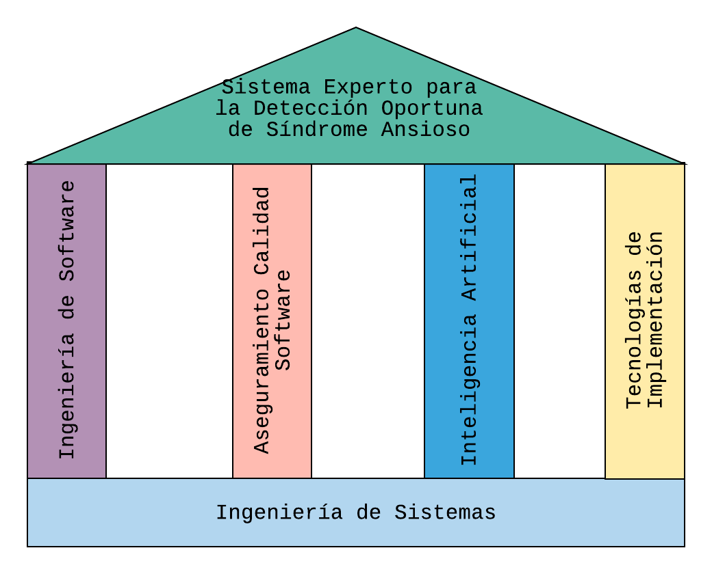
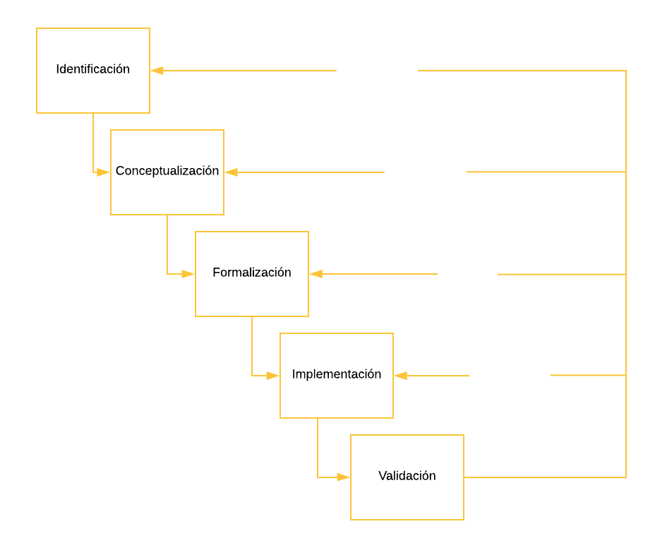
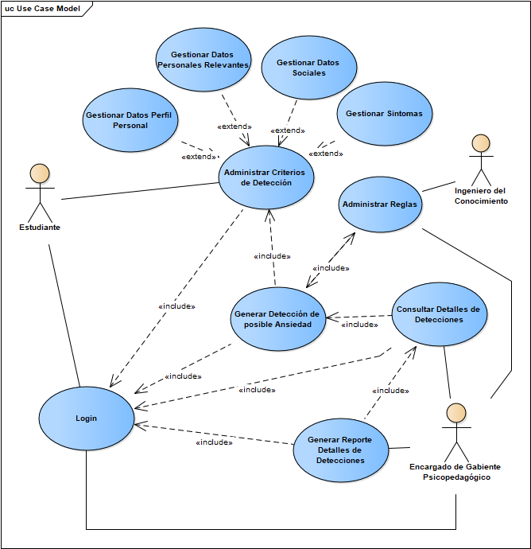
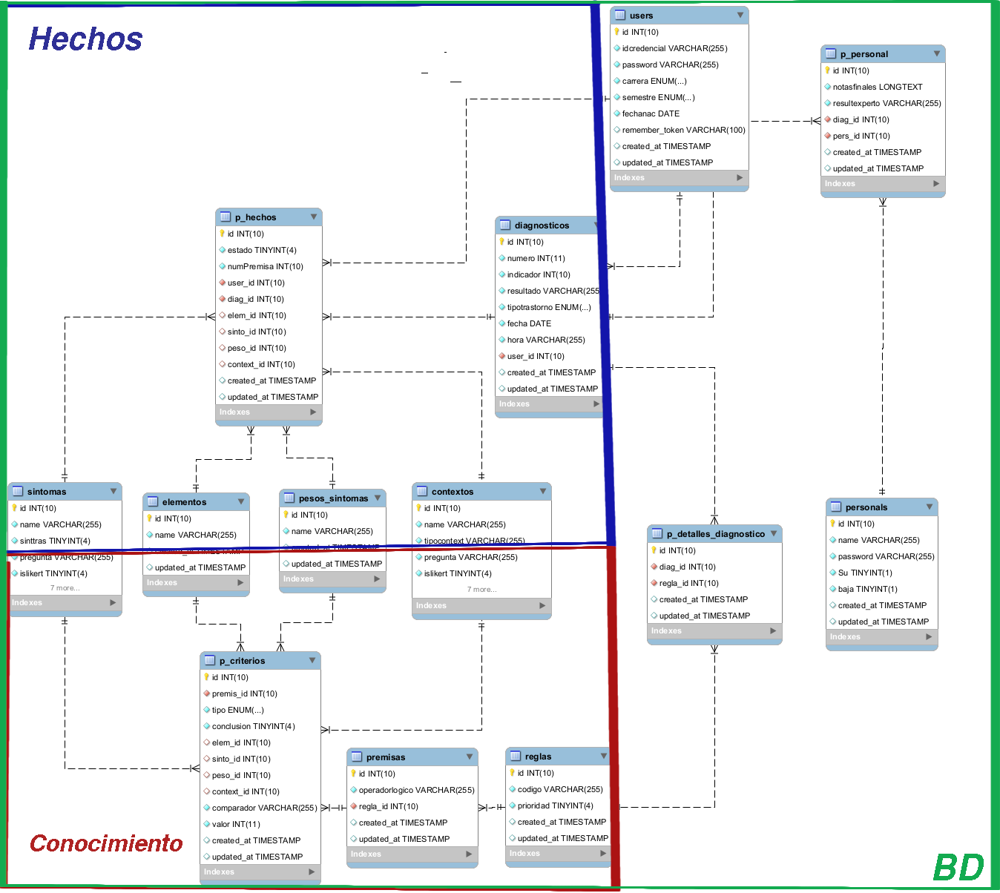
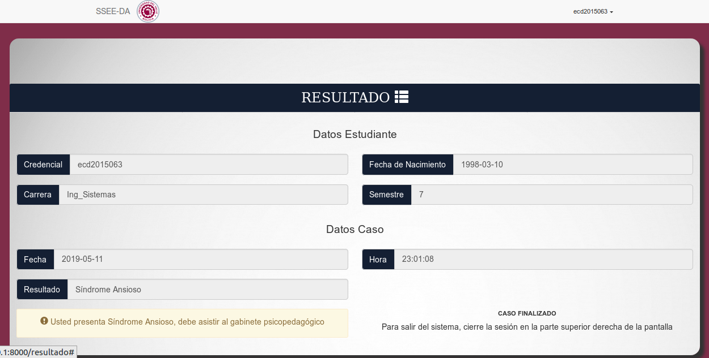
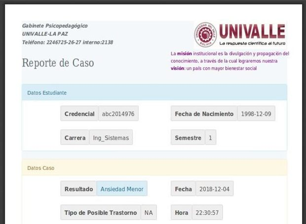

Sistema Experto para la detección oportuna de Síndrome Ansioso en estudiantes
Caso de estudio: Universidad del Valle
Brad Diego Duchen Ibañez
2019
Introducción
Personas

Desafíos
Metas
Ansiedad
- Emoción
- Afrontar desafíos
- Señal de alerta ante un peligro
- Síntomas psíquicos y somáticos
Ansiedad
Estado Mental Natural
Ansiedad Descontrolada
-
Síndrome Ansioso
-
Trastorno Ansioso
Introducción
Estudiantes
Desafíos
Profesionales
Ansiedad Descontrolada Estudiantes
- Rendimiento académico afectado
- Abandono de materias/carrera
- Potencial caso de trastorno ansioso
Planteamiento del Problema
Funciones del gabinete psicopedagógico
- Orientación
- Asistencia
- Seguimiento
- Prevención
- Síndromes/Trastornos
Casos de Síndrome Ansioso
2015

52 casos
2016,
2017
72 casos
2018 (Agosto)
60 casos
Planteamiento del Problema
Univalle subsede La Paz
- 4000 estudiantes gestión 2018
- 60 casos hasta Agosto
Encuesta (Subescala ansiedad Goldberg)
- 114 Encuestados
- 73 casos con indicios de síndrome ansioso
Formulación del Problema
Los estudiantes de la Universidad Privada del Valle Subsede La Paz presentan poca predisposición en buscar apoyo del gabinete psicopedagógico para detectar síntomas de síndrome ansioso provocando que no se tenga información oportuna
Objetivos
Objetivo General
Desarrollar un sistema experto para la obtención de información de síntomas en estudiantes de la Universidad del Valle Subsede La Paz, que apoye en la detección oportuna de síndrome ansioso
Objetivos
Objetivos Específicos
- Analizar los criterios considerados en la detección de síndrome ansioso
- Modelar el conocimiento aplicado en la detección de síndrome ansioso
- Desarrollar los componentes de la arquitectura del sistema experto
- Validar los resultados obtenidos con el sistema experto
Justificación
Técnica
Uso de Encuestas/Escalas
- Resultados temporales
- Carencia de información contextual
Social
Prevención de efectos negativos en
- Rendimiento Académico
- Interacción social en general
Marco Teórico
Marco Teórico
Ingeniería del Proyecto
Fases Metodología Buchanan
|
Fases Buchanan |
Contenido |
|---|---|
|
Identificación |
Identificación del dominio del conocimiento Historias de Usuario Requerimientos funcionales y no funcionales Modelo de dominio Diagrama de casos de uso |
|
|
Análisis de variables de conocimiento Especificación de casos de uso Modelo de datos |
|
|
Modelo base de conocimientos Modelo base de hechos Modelo de motor de inferencias |
|
|
Diagramas de secuencia Desarrollo de sistema experto Desarrollo de sistema de información Matriz de trazabilidad Plan de pruebas |
|
Pruebas |
Matriz de trazabilidad Plan de pruebas |
IDENTIFICACIÓN
Ingeniería del Proyecto
Identificación de Dominio de Conocimiento
Fuentes de Conocimiento
- Sinopsis de Psiquiatría Ciencias de conducta
- Manual diagnóstico y estadístico de trastornos mentales
- Versión en español escala de ansiedad de Hamilton
Diagrama de Casos de Uso del Sistema
CONCEPTUALIZACIÓN
Ingeniería del Proyecto
Conceptualización del Conocimiento
Variable Objetivo
- Ansiedad
Variables de Observación (Descripción-Operacionalización)
- Causas
- Síntomas
- Tipos de trastornos ansiosos
- Diferenciadores y Detonantes
Modelo de Datos
FORMALIZACIÓN
Matriz devaluación de pesos
| PESO ALTERADO % | Época de Exámenes | Época Post-Exámenes (fracaso) | Rendimiento Académico deficiente | Indecisión Vocacional | Discusiones familiares/ interpersonales/ de pareja | Pérdida de relacion familiar/ interpersonal/ de pareja | Diabetes | Enfermedades cardiacas (arritmia, hipertensión, Angina,etc.) | Asma | Infecciones (bacterias, virus, hongos, parásitos) | Analgésicos, antiinflamatorios | Antigripales | Antibióticos | Anti- espasmódicos |
|---|---|---|---|---|---|---|---|---|---|---|---|---|---|---|
| Preocupación Excesiva | -50 | -30 | -10 | -20 | ||||||||||
| Anticipaciones catastróficas | -30 | -20 | ||||||||||||
| Irritabilidad | -30 | -10 | -70 | |||||||||||
| Temor/Miedo | -20 | -30 | -20 | -10 | ||||||||||
| Inseguridad | -30 | -20 | -30 | -20 | -30 | |||||||||
| Tensión Muscular | -30 | |||||||||||||
| Inquietud | -30 | -20 | -30 | -20 | ||||||||||
| Fatiga | -30 | -20 | -40 | -40 | -30 | -30 | ||||||||
| Concentración Deficiente | -20 | -20 | -20 | -30 | -40 | |||||||||
| Insomnio | -20 | -20 | -40 | -30 | -30 | |||||||||
| Sudoración | -30 | -30 | ||||||||||||
| Taquicardia | -20 | -40 | -30 | -30 | ||||||||||
| Tics Nerviosos | -30 | |||||||||||||
| Temblores | -30 | -20 | ||||||||||||
| Escalofríos | -30 | |||||||||||||
| Sensación de Ahogo | -30 | -20 | ||||||||||||
| Colon irritable | -30 | -40 | -30 | |||||||||||
| Náuseas | -30 | -20 | -30 | -30 | -40 | |||||||||
| Micción frecuente/urgente | -30 | -20 |
IMPLEMENTACIÓN
VALIDACIÓN
Matriz de Trazabilidad
|
Requerimientos Funcionales |
Diagramas ICONIX |
|||
|
|
Modelo de Dominio |
Casos de Uso |
Robustez |
Secuencia |
|
Log In Sistema |
3.2.3. MODELO DE DOMINIO |
3,2,4, (Login) |
3,3.3. (Autenticación de Usuarios) |
3.5,1, (Autenticación de Usuarios) |
|
Gestión de criterios para Detección |
3.2.3. MODELO DE DOMINIO |
3,2,4, (Administrar Criterios de Detección) |
3,3.3. (Registro de Criterios de Detección de Ansiedad) |
3.5,1, (Detección de Ansiedad) |
|
Detección de Síndrome Ansioso |
3.2.3. MODELO DE DOMINIO |
3,2,4, (Generar Detección de posible Ansiedad) |
3,3.3. (Detección de Ansiedad) |
3.5,1, (Detección de Ansiedad) |
|
Presentación de resultados |
3.2.3. MODELO DE DOMINIO |
3,2,4, (Generar Detección de posible Ansiedad) |
3,3.3. (Detección de Ansiedad) |
3.5.1. (Detección de Ansiedad) |
|
Gestión de reglas |
3.2.3. MODELO DE DOMINIO |
3,2,4, (Administrar Reglas) |
3,3.3. (Detección de Ansiedad) |
3.5,1, (Detección de Ansiedad) |
|
Consulta de datos de estudiantes |
3.2.3. MODELO DE DOMINIO |
3,2,4, (Consultar Detalles de Detecciones) |
3,3.3. (Consulta de Datos y Generación de Reportes) |
3.5,1, (Consulta de información oportuna) |
|
Generar reportes de estudiantes |
3.2.3. MODELO DE DOMINIO |
3,2,4, (Generar Reporte Detalles de Detecciones) |
3,3.3. (Consulta de Datos y Generación de Reportes) |
3.5,1, (Consulta de información oportuna) |
Conclusiones
Objetivo General
Desarrollar un sistema experto para la obtención de información de síntomas en estudiantes de Univalle, que apoye en la detección oportuna de síndrome ansioso
Conclusiones
Objetivo General
Desarrollar un sistema experto para la obtención de información de síntomas en estudiantes de Univalle, que apoye en la detección oportuna de síndrome ansioso
Conclusiones
Objetivos Específicos
Analizar los criterios considerados y Modelar el conocimiento aplicado en la detección de síndrome ansioso
Conclusiones
Objetivos Específicos
Desarrollar los componentes y validar los resultados obtenidos con el sistema experto
